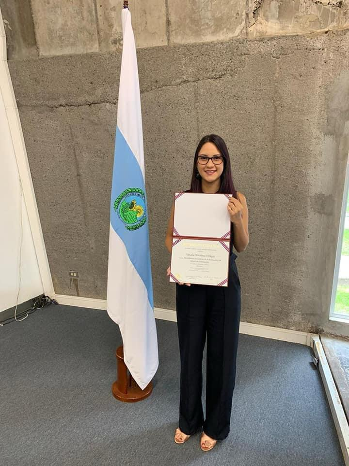
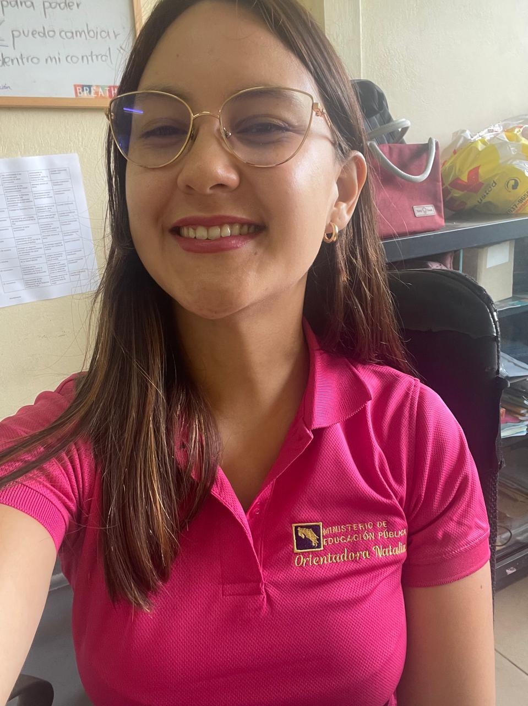
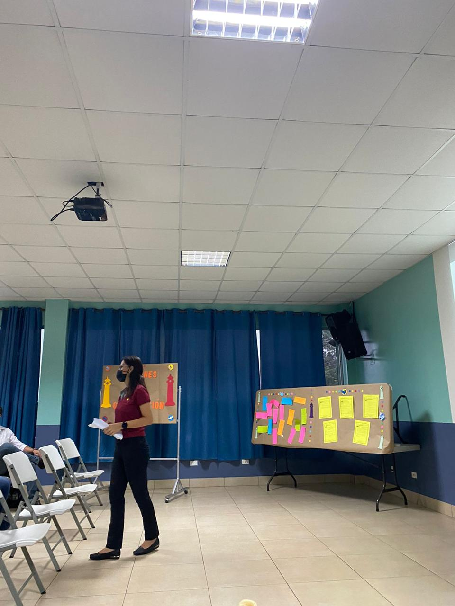
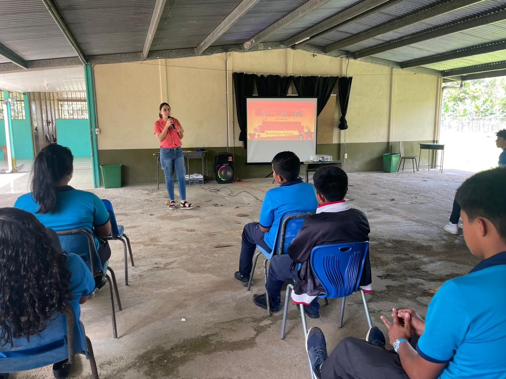

Proyecto vocacional
Acompaño a los estudiantes en giras y actividades que los ayudan a explorar opciones profesionales y a construir un proyecto de vida más consciente y significativo.
Apasionada por mi profesión, facilito procesos que fomentan el autoconocimiento, la toma de decisiones, el desarrollo del proyecto de vida y el descubrimiento del sentido personal y del contexto.

Tengo experiencia trabajando con adolescentes en instituciones privadas y públicas. Me apasiona comprender a las personas y acompañarlas en su bienestar integral.

Computación básica
Paquete Microsoft Office
Outlook
Microsoft Teams
SQL
CSS
Trabajo en equipo
Comunicación asertiva
Proactividad
Adaptabilidad
Creatividad
Conciliación
Acompaño a los estudiantes en giras y actividades que los ayudan a explorar opciones profesionales y a construir un proyecto de vida más consciente y significativo.
Apoyo a los estudiantes a identificar y fortalecer su estilo de aprendizaje, potenciando sus habilidades académicas y su autonomía en el estudio.

Facilito el desarrollo de habilidades blandas como la empatía, la comunicación y la resolución de conflictos, promoviendo relaciones saludables y un crecimiento integral.

Número de contacto: +506 86815830
Correo: nati.m.26366@gmail.com
Redes Sociales: @NatiOrienta